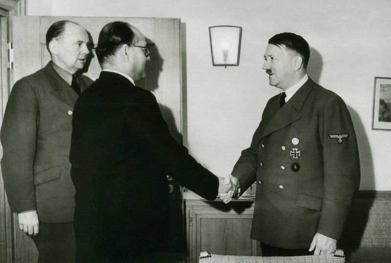
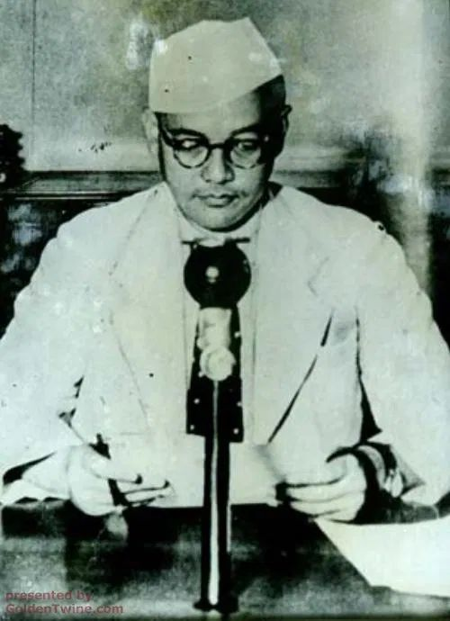
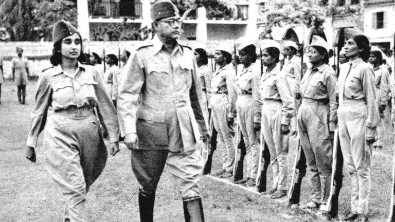
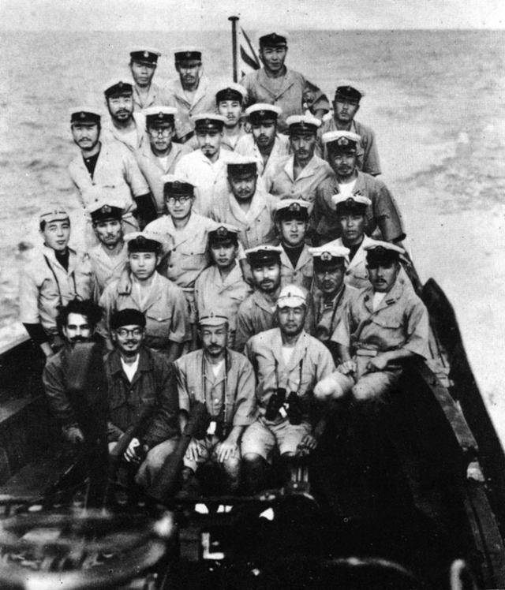
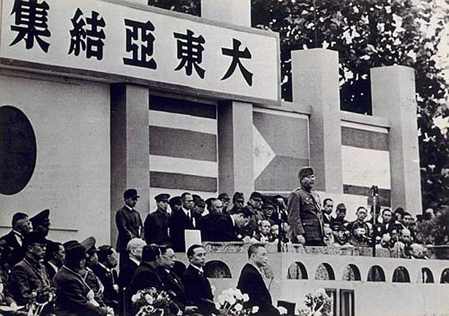
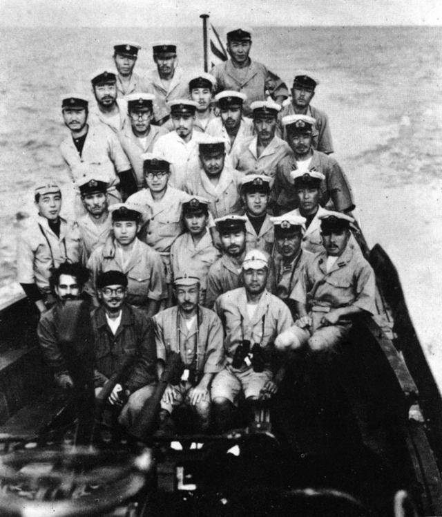
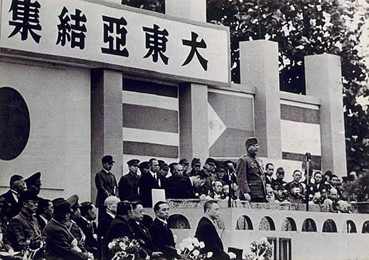

TRIBUTE TO OUR NATIONAL HERO: Netaji Subhash Chandra Bose
"Subhash Chandra Bose's Role in India's Independence"
S C Bose was always in favour of armed revolution in order to expel the Britishers from India.
During the time when the Second World War took place, Bose revived the Indian National Army (INA) with the help of the Imperial Japanese Army
and also founded an Indian Radio Station called 'Azad Hind Radio'.
So how did he do that?
In 1943, Bose left for Japan. He travelled with the German submarine “U-180” around the Cape of Good Hope to the southeast of Madagascar, where he was transferred to the “I-29” for the rest of the journey to “Imperial Japan”. This was the only civilian transfer between two submarines of two different navies in World War II. The idea of an independence army was revived with the arrival of Subhas Chandra Bose in the Far East in 1943. In July, at a meeting in Singapore, Rash Behari Bose handed over control of the organisation what was then known as the Indian Independence League to Subhas Chandra Bose. Bose was able to reorganise the fledgling army and organise massive support among the expatriate Indian population in south-east Asia, who lent their support by both enlisting in the Indian National Army, as well as financially in response to Bose's calls for sacrifice for the independence cause. INA had a separate women's unit, “the Rani of Jhansi Regiment” (named after Rani Lakshmi Bai) headed by Capt. Lakshmi Swaminathan, which is seen as a first of its kind in Asia.
Even when faced with military reverses, Bose was able to maintain support for the Azad Hind movement.
In Europe, S C Bose sought help from Adolf Hitler and Benito Mussolini for the liberation of India.
Bose had struck an alliance with Japan and Germany as he felt that his presence in the East would help India in the freedom struggle against the British.



 


